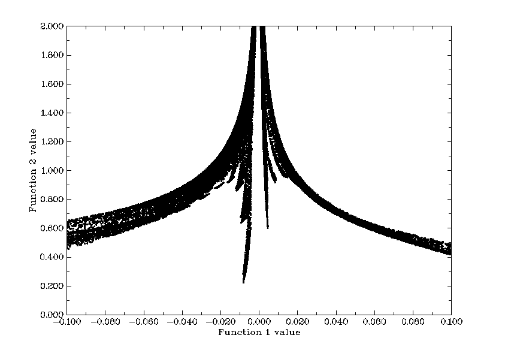
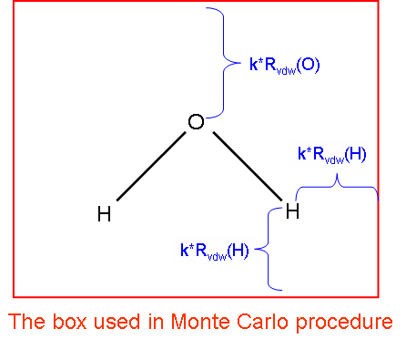
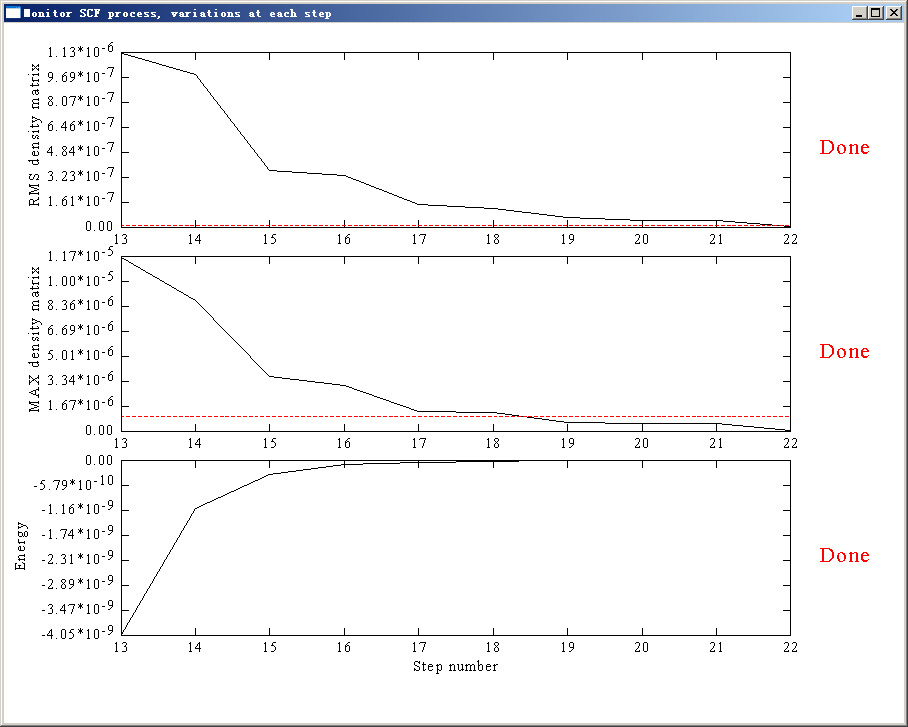
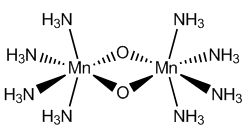
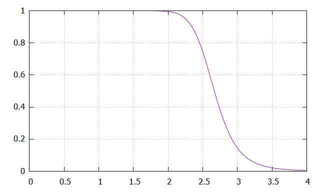
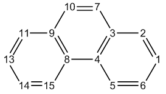
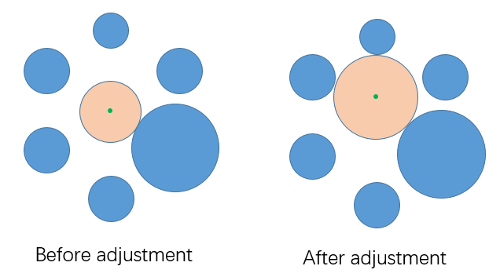

其它功能，第 1 部分 (Other functions, part 1) (100)¶
Multiwfn manual, p.384–408.英文原文见同名 English 章节。 Images:
../imgs/.
3.100 其它功能，第 1 部分 (Other functions, part 1) (100)¶
由于 Multiwfn 功能太多，其中一些功能相对主功能而言比较“小”，还有一些功能与波函数分析关系不密切，这些功能被归为“其它功能 (other functions)”。因为“其它功能”中的子功能数量巨大，“其它功能”被分为第 1 部分 (主功能 (main function) 100) 和第 2 部分 (主功能 (main function) 200)。第 1 部分将在下文描述，第 2 部分将在 3.200 节介绍。
3.100.1 绘制两个函数间的散点图并生成它们的 cube 文件 (Draw scatter graph between two functions and generate their cube files)¶
本功能允许同时生成两个函数的格点数据并共享格点设置，你可以选择导出它们的 cube 文件、查看它们的等值面并绘制它们之间的散点图。
进入本功能后，选择你感兴趣的两个实空间函数 (real space functions)，例如你想分析实空间函数 (real space functions) 16 和 14，应该输入 16,14 (下面第一和第二个函数将分别称为函数 1 和函数 2)。然后选择一种模式设置格点。之后 Multiwfn 开始计算它们的格点数据。计算完成后，会打印所有格点中两个函数的 Pearson 相关系数，屏幕上出现一个菜单，所有选项都是自明的。如果你选择 -1 绘制散点图，会立即弹出如下图形：
每个散点对应每个格点，在 X 轴和 Y 轴的位置分别对应此点处函数 1 和函数 2 的值。Multiwfn 根据最小值和最大值自动确定坐标轴范围，有时你必须用选项 (option) 4 和 5 自己重设范围，否则几乎看不到点。点的大小可用 settings.ini 中的 “symbolsize” 调节。图形可用选项 (option) 1 保存到当前目录。点的 X-Y 数据集可用选项 (option) 2 导出到当前目录下的 output.txt。

选项 (option) -2 和 -3 分别把函数 1 的值在特定范围内或范围外处的函数 2 的值设为特定值。注意，一旦修改数据就无法再恢复。
特殊用法 (Special usage)：如果你已经有要研究的两个函数的 cube 文件 (分别称为 func1.cub 和 func2.cub)，而你想直接在后处理菜单中使用这些函数 (例如绘制散点图、修改数值)，应该遵循以下步骤：在启动 Multiwfn 后输入 func1.cub 的路径，然后进入主功能 (main function) 100 并选择子功能 (subfunction) 1，再在选择实空间函数 (real space functions) 时输入 0,0，然后输入 func2.cub 的路径，之后两个 cube 文件的格点数据会被直接作为函数 1 和函数 2。注意，当然 func1.cub 和 func2.cub 的格点设置必须完全相同。
3.100.2 导出各种文件或生成量子化学程序的输入文件 (Export various files or generate input file of quantum chemistry programs)¶
导出各种文件 (Exporting various kinds of files) 本功能可用于把当前结构输出为 .pdb、.xyz、.gro、.cif、.cml 文件。当只有 GTF 信息可用时波函数信息可导出为 .wfn 或 .wfx 文件，当有基函数信息时还可导出为 .mwfn、.molden、.fch、GENNBO 输入文件 (.47)、旧 Molekel 输入文件 (.mkl)。显然，Multiwfn 可用作非常有用的文件格式转换器，例如 .mwfn/.wfn/.wfx/.fch/.molden/.gms ……
→ .pdb/.xyz/.cml/.gjf/.wfn/.wfx/.molden/.fch/.47 ……
此外，值得注意的是，可以用 Gaussian 或其它程序生成 .fch 或 .molden 文件，然后用 Multiwfn 把它转为 .mkl 文件，再用 orca_2mkl test -gbw 把 test.mkl 转为 test.gbw，从而使 ORCA 能用其它程序产生的波函数作为初始猜测。我还有一个自动完成该过程的 shell 脚本，见 http://sobereva.com/517。
如果当前输入文件是 .chg 格式，它载有原子信息和原子电荷 (详见 2.5 节)，你可以用选项 (option) 1 把它转为 .pqr 文件。.pqr 和 .pdb 格式非常相似，主要区别是前者多两列记录原子电荷和原子半径。在所得 .pqr 文件中，原子电荷与 .chg 文件中相同，而原子半径列对应于 Bondi vdW 半径。.pqr 可直接载入 VMD 程序，原子可按原子电荷着色 (如果 .chg 文件第四列记录的是其它原子信息，例如原子自旋布居，在 VMD 中原子也可按自旋布居着色)。这对直观展示原子性质非常有用，图示见 4.A.10 节。
导出格点数据文件 (Exporting grid data file) 当内存中有一套格点数据时 (可从例如 .cub 文件载入或由例如主功能 (main function) 5 计算得到)，则：
通过选项 (option) 35 你可以导出流行的 .cub 文件。通过选项 (option) 36 你可以导出 .vti 文件，这是一种著名且免费的体数据可视化器 ParaView (https://www.paraview.org) 支持的格式，同时 Multiwfn 还会问你是否同时导出一个以 Bohr 为单位记录当前体系的 .cml 文件，如果你选择导出，就可以用 ParaView 同时载入它，从而同时绘制格点数据和分子结构。
通过选项 (option) 37 你可以按 VASP 格式导出格点数据，就像 CHGCAR 和 LOCPOT 一样。
生成量子化学和第一性原理程序的输入文件 (Generating input file of quantum chemistry and first-principles programs) 本功能还能基于当前结构、净电荷和多重度为一批已知量子化学程序生成输入文件，包括 Gaussian、GAMESS-US、ORCA、MOPAC、Dalton、MRCC、Molpro、NWChem、PSI4、CFOUR、Molcas。流行的第一性原理程序 CP2K 和 Quantum ESPRESSO 的输入文件也能生成。
生成 Gaussian 或 GAMESS-US 输入文件时，如果有基函数信息，你可以选择是否把轨道展开系数写入它们的输入文件，从而使当前波函数能用作初始 SCF 猜测。注意，此时你必须在输入文件中手动指定与当初得到当前波函数所用相同的基组，否则 Gaussian 或 GAMESS-US 任务必定失败。
导出 Dalton 输入文件时，如果有基函数信息，你可以选择把轨道展开系数写入导出的 .dal 文件，它可直接用作初始猜测。通过该设计，例如，你可以轻松地把由 UHF/UKS 波函数产生的非限制自然轨道 (unrestricted natural orbitals, UNO) 用作 Dalton 的 CASSCF 计算的初始轨道 (Dalton 本身不支持 UHF/UKS！)。详见“Using Multiwfn to take orbitals generated by other programs as initial guess in Dalton calculations”(用 Multiwfn 把其它程序产生的轨道作为 Dalton 计算的初始猜测) (中文，http://sobereva.com/740) 及其中例子。
因为 ORCA 非常流行、快速且有众多重要功能，而它的关键词不如 Gaussian 易于指定，因此提供了生成 ORCA 输入文件的专门界面，其中可选择常用的 ORCA 计算级别，生成的关键词是对相应级别最恰当、最高效的。非常详细的描述见 “On the function of generating ORCA input file in Multiwfn ”(关于 Multiwfn 中生成 ORCA 输入文件的功能) (中文，http://sobereva.com/490)，还有一个实际例子 “Simulating UV-Vis and ECD spectra using ORCA and Multiwfn”(用 ORCA 和 Multiwfn 模拟 UV-Vis 和 ECD 光谱) (http://sobereva.com/485)。视频 “Study geometry, vibration, IR spectrum and orbitals based on ORCA program and other codes”(https://youtu.be/tiTmTbtbtig) 也用了本功能。
因为 PSI4 程序在做对称匹配微扰理论 (symmetry-adapted perturbation theory, SAPT) 方面非常流行，生成 PSI4 输入文件的功能就是为此精心设计的。
生成 CP2K 输入文件的能力极其强大有用。在把分子或周期体系的几何文件载入 Multiwfn 后，本功能能够生成各种任务、带多种常用选项的 CP2K 输入文件。详见 “Using Multiwfn to very conveniently create input file of CP2K”(用 Multiwfn 非常方便地创建 CP2K 输入文件) (http://sobereva.com/587)。
所需信息 (Information needed)：原子坐标 (Atom coordinates)、GTFs (用于导出 .wfn/.wfx)、基函数 (basis functions) (用于导出 .mwfn/.fch/.molden/.47)、格点数据 (grid data) (用于导出 cub、vti 和 VASP 格点数据)
3.100.3 计算分子范德华体积 (Calculate molecular van der Waals volume)¶
在本功能中，用 Monte Carlo 方法计算当前体系的范德华 (van der Waals, vdW) 体积，提供了 vdW 区域的两种定义： (1) 原子 vdW 球的叠加。该定义不是很准确，因为没有考虑电子效应，但计算速度非常快且不需要波函数信息。 (2) 由电子密度某等值面所包围的区域，对孤立体系等值 0.001 合适，而对凝聚相中分子 0.002 更合适。可以用
settings.ini 中的 “MCvolmethod” 选择定义。
Monte Carlo 过程的原理非常简单：如果定义一个能容纳整个体系的盒子 (体积为 L)，并让 N 个粒子随机分布在盒中，如果有 n 个粒子落在 vdW 区域内，那么当前体系的 vdW 体积就是 n/NL。当然，结果随 N 增大而改善。在 Multiwfn 中，你需要通过输入一个数 i 来定义 N，关系是 N=1002i，对小分子当 i=9 时精度一般可接受，对大体系你可能需要逐渐增大 i，直到 i 与 i+1 之间的结果变化小到可接受为收敛。对 vdW 区域的定义 2，你还需要输入密度的等值和用于定义盒子的因子 k，见下图示，其中 Rvdw 是 vdW 半径。如果 k 太小，vdW 区域可能被截断，但如果 k 太大，则需要更多点来维持足够精度。对等值 0.001，推荐 k=1.7。
所需信息 (Information needed)：原子坐标 (atom coordinates) (对定义 1)、GTFs (对定义 2)
3.100.4 在全空间对函数积分 (Integrate a function over the whole space)¶
这是非常有用且强大的功能，用于在全空间对所选实空间函数 (real space function) 积分。这里数值积分方法基于 Becke 在论文 J. Chem. Phys., 88, 2547 (1988) 中提出的用于积分 DFT 泛函的方法，它也适用于任何实空间函数，但注意函数必须光滑且在无穷远渐近趋于零。精度由积分点数决定，你可以分别用 settings.ini 中的 “radpot” 和 “sphpot” 参数调节径向和角向积分点数。被积函数可从内置函数中选择，你也可以自己写新函数作为自定义函数，见 2.6 和 2.7 节。
如果 settings.ini 中的 outmedinfo 设为 1，那么在本功能计算期间，会在当前文件夹下导出一个名为 integrate.txt 的文件，其中包含所有积分点的这些数据：序号、笛卡尔坐标、函数值、Lebedev 积分权重和原子权重函数。
考察两个波函数文件间实空间函数的差异 (Examination of difference of a real space function between two wavefunction files)

顺便说一下，如果你想考察两个波函数文件对某实空间函数的差异，你可以在主功能 (main function) 100 中选择函数 (function) -4 或 -5 (隐藏函数)，要积分的函数将是 [f(file1)-f(file2)]2 或 |f(file1)-f(file2)|，其中 f 是你将选择的实空间函数，“file1” 是启动 Multiwfn 时载入的波函数文件，“file2” 是你将在本功能中选择的波函数文件。在本功能中你还可以设置电子密度的判据，从而让 Multiwfn 只对低密度区域计算差异 (即忽略核区)。此外，计算后 Multiwfn 会自动把 file1 的格点数据导出为当前文件夹下的纯文本文件，文件名直接反映当前计算条件。例如，文件名 a.wfn_003_0075_0434 意味着 “file1” 是 a.wfn，选择了第 3 个实空间函数 (real space function)，径向和角向积分点分别为 75 和 434。在以后研究中，如果所有计算条件与文件名相符 (该文件必须放在当前文件夹下)，那么 Multiwfn 会直接从该文件载入 “file1” 的数据而不是重新计算，以减少计算时间。
球对称平均 ELF / LOL 的计算 (Evaluation of spherically symmetric average ELF / LOL)
在 J. Comput. Chem., 38, 2258 (2017) 中，作者提出可用以下量确定程分离 DFT 泛函的最优 ω 参数：
在 Multiwfn 中，如果你在本功能中选择 ELF 作为被积函数，该量会自动计算并输出。rELF 作为“球对称平均 ELF (spherically symmetric average ELF)”输出，根号内分子分母也一并输出。
在 J. Phys. Chem. C, 123, 4407 (2019) 中，提出了 LOL-tuning，其中涉及“球对称平均 LOL (spherically symmetric average LOL)”：
如果在本功能中选择 LOL，rLOL 连同根号内分子分母都会打印。
例子见 4.100.4 节。所需信息 (Information needed)：原子坐标 (Atom coordinates)、GTFs。
3.100.5 显示 alpha 和 beta 轨道间重叠积分 (Show overlap integral between alpha and beta orbitals)¶
对非限制波函数，alpha 和 beta 轨道之间一般不满足正交归一条件。本功能计算 alpha 和 beta 轨道间的重叠矩阵 (overlap matrix)
对角元有助于评估相应自旋轨道对的匹配程度，明显偏离 1 表明自旋极化显著。
在本功能中有两个选项，选项 (option) 1 计算完整重叠矩阵，对角元会打印在屏幕上，整个重叠矩阵可选择输出到当前文件夹下的 ovlpmat.txt；此外，还显示 Alpha 和 Beta 轨道间的最大配对。该计算对大体系可能耗时。选项 (option) 2 只计算并打印对角元，这总是很快的。
由于单行列式 (single determinant, SD) 波函数的 S2 算符期望值可很容易从重叠矩阵导出，如果选择选项 (option) 1，Multiwfn 还输出该量：
其中 Nα 和 Nβ 是 alpha 和 beta 电子数，〈𝑆2〉exact 是总自旋角动量平方的精确值
所需信息 (Information needed)：GTFs
3.100.6 监控 Gaussian 的 SCF 收敛过程 (Monitor SCF convergence process of Gaussian)¶
SCF 收敛困难是日常工作中经常遇到的令人烦恼的问题，监控收敛对找到合适解决办法很重要。Multiwfn 可以用 Gaussian 的输出文件作为输入文件来监控 SCF 过程。注意 route 部分必须指定 #P，否则输出文件中不会记录 SCF 过程的中间信息。
进入本功能 (主功能 (main function) 100 的子功能 (subfunction) 6) 时，屏幕上打印所有前步信息和收敛阈值，例如
Step# RMSDP Conv? MaxDP Conv? DE Conv?
8 3.51D-06 NO 5.15D-05 NO -8.43D-08 YES
9 1.37D-06 NO 9.11D-06 NO -2.17D-09 YES
10 3.03D-07 NO 2.91D-06 NO -3.75D-10 YES
11 3.12D-08 NO 4.76D-07 YES -1.07D-11 YES
12 7.69D-09 YES 5.72D-08 YES -1.56D-13 YES
Goal 1.00D-08 1.00D-06 1.00D-06
SCF done!
同时弹出一个窗口，其中包含对应于能量、密度矩阵最大值变化和 RMS 变化收敛过程的曲线。关闭窗口后，你可以通过选择相应选项打印信息并在特定步数范围内重画曲线图，Y 轴根据数据范围自动调节。
如果 SCF 任务正在进行，即输出文件在不断更新，每次你选择打印并绘制收敛过程时，Gaussian 输出文件都会被重载，所以你看到的总是最新信息。对监控耗时的 SCF 过程，建议你一直停留在此界面直到 SCF 任务结束，在此期间你每隔一段时间选择选项 (option) 2
如此频繁地显示最新的 5 步并分析收敛趋势。
图中，灰色虚线表示 Y 轴零点位置，红色虚线表示收敛阈值。下图显示了某体系最后 10 步 SCF 的情况。若最右侧出现 “Done”，则表示相应性质已经收敛，此处三项均标有 “Done”，因此整个 SCF 过程已经结束。
该功能也兼容关键词 SCF=QC 和 SCF=XQC，但不兼容 SCF=DM。
3.100.8 生成由片段波函数组合初猜的 Gaussian 输入文件 (Generate Gaussian input file with initial guess combined from fragment wavefunctions)¶
该功能用于将若干片段波函数组合为初猜波函数，主要有三种用途：
1 为配合物生成高质量初猜波函数 (Generate high-quality initial guess wavefunction for complex) 若你已有各片段收敛的波函数，且片段间相互作用不是很强，则以组合波函数作为配合物的初猜，SCF 过程将收敛得更快。
2 进行简单的能量分解 (Perform simple energy decomposition) 注意：强烈不建议再用下述方式做能量分解！使用 sobEDA 或 sobEDAw 能量分解分析（基于 Multiwfn 和 Gaussian）是好得多的选择，不仅能得到完整项，而且使用也容易得多。见 J. Phys. Chem. A, 127, 7023 (2023) 及非常详细的教程：http://sobereva.com/soft/sobEDA_tutorial.zip。
形成配合物的总能量变化可分解为
其中 ΔEels 为静电相互作用项，若片段为中性通常为负值；ΔEXC 为

配合物形成过程中交换-相关能的变化；ΔEPauli 源于片段占据轨道中电子间的 Pauli 排斥效应，恒为正，有时也称为交换-排斥项。为方便起见，通常将
这三项合并为空间位阻项 (steric term)（ΔEsteric）。
上式中的 ΔEorb 为轨道相互作用项，它源于占据 MO 与虚 MO 的混合，体现极化与电荷转移效应。若将组合波函数
用作配合物的初猜，则 ΔEorb 可由最后一次 SCF 迭代能量减去第一次 SCF 迭代能量求得：
注意 ESCF,last = Ecomplex。显然，有如下关系
顺便一提，若你研究的配合物涉及明显的色散相互作用（vdW 相互作用），有两种可能的途径评估色散能分量：
(1) 先用 Hartree-Fock 计算相互作用能（∆𝐸tot HF)，再用 MP2（或更好的 post-HF 方法）计算相互作用能（∆𝐸tot MP2 ），则 ∆𝐸disp = ∆𝐸tot MP2 −∆𝐸tot HF。该
关系源于色散能在 HF 能量中完全缺失。(2) 用完全不能描述色散能的 HF 或 DFT 泛函计算相互作用能（例如 B3LYP 和 BLYP），再用 Grimme 的 DFT-D3 程序（https://www.chemie.uni-bonn.de/grimme/de/software/dft-d3/get_dft-d3）以相应参数评估 DFT-D3 色散校正对相互作用能的贡献，可简单视为总相互作用能中的色散分量。若你不知道如何操作且能阅读中文，可参阅我博客中的文章：http://sobereva.com/210。
简单的能量分解例子见 4.100.8 节。
3 模拟反铁磁耦合体系 (Modelling antiferromagnetic coupling system) 我将以一个代表性的反铁磁耦合体系——Mn2O2(NH3)8 为例说明该概念并演示如何使用本功能，
其基态为单重态，而两个 Mn 原子自旋相反且每个 Mn 原子均为高自旋。显然，受限闭壳层计算不适合该体系，需要非限制计算，然而，默认初猜为非对称破缺态，因此收敛后的非限制波函数会回到受限闭壳层波函数。为了使波函数收敛到预期状态，必须分别计算四个片段的波函数，然后用 Multiwfn 将它们组合以构建合适的对称破缺初猜。四个片段应定义为
片段 1：左侧 Mn(NH3)4。电荷 = +2，六重态。片段 2：右侧 Mn(NH3)4。电荷 = +2，六重态。片段 3：其中一个桥氧原子。电荷 = -2，单重态。

片段 4：另一个桥氧原子。电荷 = -2，单重态。注意每个片段计算时必须指定 nosymm 和 pop=full 关键词。假设输出文件分别为 frag1.out、frag2.out、frag3.out 和 frag4.out，启动后先让 Multiwfn 载入 frag1.out，然后选择功能 100 和子功能 8 进入本功能，输入 4 告诉 Multiwfn 共有四个片段；由于 frag1.out 已载入，你只需依次输入 frag2.out、frag3.out 和 frag4.out 的路径（含文件名）。之后当前目录下将输出名为 new.gjf 的 Gaussian 输入文件。注意每输入一个片段，Multiwfn 都会询问是否翻转其自旋，仅对片段 2 应选择 y，即将其未成对电子自旋方向变为向下（默认自旋为向上），以恰好抵消片段 1 中相反的自旋，从而使配合物多重度为 1。
从 new.gjf 的注释（感叹号后的文字）中，你可以清楚知道配合物的 MO 如何由片段的 MO 组合而成。例如，对于双片段体系，new.gjf 中的一个配合物 MO 为
! Alpha orbital: 12 Occ: 1.000000 from fragment 2
0.00000E+00 0.00000E+00 0.00000E+00 0.00000E+00 0.00000E+00
0.00000E+00 0.00000E+00 0.00000E+00 0.18850E-01 -0.53690E-01
-0.74180E-01 0.48861E+00 0.16080E+00 -0.12897E+00 -0.12897E+00
0.47150E-01 -0.25269E+00 0.39361E+00 -0.48811E+00 0.36123E+00
已知片段 1 有 8 个基函数，片段 2 有 12 个基函数，而该配合物 MO 来自片段 2，因此前 8 个数据（高亮部分）为零，只有后 12 个数据有值（与片段 2 的 Gaussian 输出文件中相应 MO 系数相同）。
若你使用了弥散函数，在用 Gaussian 运行 new.gjf 时在 Link401 遇到问题，可加上 IOp(3/32=2) 关键词后重试。
3.100.9 评估原子间连接性与原子配位数 (Evaluate interatomic connectivity and atomic coordination number)¶
在 DFT-D3 原始论文（J. Chem. Phys., 132, 154104 (2010)）中，作者认为原子 A 的配位数（CN）可近似表示为
其中 R 为来自 Chem. Eur. J., 15, 186 (2009) 的 Pyykkö 共价半径，rAB 为 A 与 B 间距离。
据此思想，在本模块中 A 与 B 之间的原子间连接性指数（I）按如下确定：
假设 RA+RB=2.0，则该函数可绘制如下。I 值在 rAB=RA+RB 时等于 0.995
注意 I 不应用作键级的指标，它没有区分成键类型与强度的能力。
本模块输出每对原子间的 I，打印阈值可由用户输入。通常，当 I 接近 1.0 时，意味着两原子成键，而若接近 0.0，则可视为它们之间无化学键相连。还输出 I 的最接近整数，即 nint(I)，以便于检查结果。
对每个原子（例如原子 A），ABB A ≠ 以 “Sum of connectivity” 打印，而 I
()ABB A ≠ 以 “Sum of integer connectivity” 打印。前者与后者可分别视为 nint I
原始与实际配位数。
最后，你可选择是否将所有 I 值以矩阵形式导出到当前目录下的 connmat.txt。下面是处于平衡几何的乙炔的输出例子：
1C --- 2C : 0.99951 Nearest integer: 1
1C --- 3H : 0.99974 Nearest integer: 1
2C --- 4H : 0.99974 Nearest integer: 1
1 C Sum of connectivity: 2.0016 Sum of integer connectivity: 2
2 C Sum of connectivity: 2.0016 Sum of integer connectivity: 2
3 H Sum of connectivity: 1.0021 Sum of integer connectivity: 1
4 H Sum of connectivity: 1.0021 Sum of integer connectivity: 1
所需信息：原子坐标
3.100.11 计算两轨道间的重叠与质心距离 (Calculate overlap and centroid distance between two orbitals)¶
该功能用于计算两轨道间的重叠与质心距离，这对许多用途有用，例如分析电子激发过程中的电荷转移。你需要输入两轨道的序号，然后轨道质心的 X、Y、Z 将按如下计算

则轨道 i 与 j 间的质心距离计算为
本功能还计算两轨道的重叠程度，分别计算下面两个量（而直接计算两轨道波函数的重叠积分显然无意义，因为由于正交归一条件它必为零）：
上式所示积分不用解析法计算，而用基于 Becke 格点的数值积分方法计算。积分格点可通过 settings.ini 中的 “radpot” 与 “sphpot” 设置，默认值已足够高，若体系较大，尤其当你想研究许多轨道对时，可适当调低以减少计算代价。
计算完成后，Multiwfn 会询问是否将两质心作为两个额外的虚拟原子（符号为 Bq）添加。若选择 y，则可进入主功能 0，以透明或网格风格可视化相应轨道等值面，以检查质心位置与轨道形状的对应关系。
所需信息：GTFs、原子坐标
3.100.12 Alpha 与 Beta 轨道间的双正交化 (Biorthogonalization between alpha and beta orbitals)¶
介绍 (Introduction) 众所周知，由非限制开壳层计算（UHF 或 UKS）产生的波函数，其 alpha 与 beta 轨道常常明显不匹配，该现象使轨道分析变得困难，因为必须同时考虑两套轨道。虽然限制性开壳层（ROHF 或 ROKS）计算没有此问题，但其总电子能量、轨道能量与电子分布不如非限制开壳层计算准确。
本功能用于对自旋多重度大于 1 的非限制开壳层波函数，在 alpha 与 beta 轨道间进行双正交化。原始 alpha 与 beta 分子轨道将分别变换为一套新轨道。虽然最终仍有两套轨道，但其波函数已几乎完美匹配，因此之后你只需讨论其中一套轨道。
此处所谓双正交化具体指同时满足两个条件：(1) 对每套自旋轨道，它们自身正交归一 (2) 不同序号的 Alpha 轨道与 Beta 轨道正交。若不做双正交化，UHF/UKS 轨道仅满足第一个条件。
算法细节 (Algorithm details) 双正交化通过奇异值分解（SVD）技术实现。首先构建 alpha 与 beta 轨道间的重叠积分矩阵 O，然后对其做 SVD 分解为 O=UV †，其中 为对角矩阵，对角元称为
“奇异值”，其本质上对应双正交化变换后轨道间的重叠积分，正常情况下应非常接近 1.0。列矩阵 U（V）对应 alpha（beta）自旋原始轨道与新轨道间的变换矩阵。新生成的双正交化轨道的系数矩阵可由下式得到
由于 U 与 V 为酉矩阵，这种变换不影响当前体系的可观测量。
注意双正交化变换不应一次对所有轨道进行，因为这会导致占据与虚轨道混合，从而改变可观测量性质。在 Multiwfn 中，变换按下面三个步骤依次进行。总轨道数记为 ntot，alpha 与
(1) 所有占据 alpha 轨道（1~nα）与所有占据 beta 轨道（1~nβ）间的双正交化。该步使每个所得占据 beta 轨道与一个所得 alpha 轨道配对。
(2) alpha 轨道（nβ+1~nα）与所有虚 beta 轨道（nβ+1~ntot）间的双正交化。该步使每个所得“单占据” alpha 轨道与一个所得 beta 虚轨道配对
(3) 所有 alpha 虚轨道（nα+1~ntot）与尚未配对的虚 beta 轨道（nα+1~ntot）间的双正交化。
注意在双正交化步骤 2 与 3 中，所用的重叠积分矩阵 O 应基于上一步更新后的系数矩阵重建。
经过这三步变换后，在多数情况下，所有 alpha 与 beta 轨道间很好地满足一一配对，即序号相同的 alpha 轨道与 beta 轨道的波函数分布差异可忽略。同时，每个 alpha 轨道与不同序号的 beta 轨道近乎正交。值得注意的是，这样得到的 alpha 轨道与 beta 轨道并非严格正交，因为要达到严格正交条件，必须同时变换所有 MO，这将导致占据与未占据 MO 间不希望的混合。
双正交化轨道不是 Fock 算符（或 Kohn-Sham 算符，下同）的本征函数，不像分子轨道那样，但其能量可作为相应自旋 Fock 算符的期望值求得。具体而言，若你要求 Multiwfn 求轨道能量，Multiwfn 进行如下表象变换：
其中 FσAO 为从外部文件载入的原始基函数下 σ 自旋的 Fock 矩阵，Cσ(μ,i) 对应 σ 自旋双正交化轨道 i 中基函数 μ 的系数。双正交化轨道 j 的能量即为 Fbiortho(j,j)。
注：通常 α 与 β 电子数不同，和/或其分布不对称，因此两自旋的单电子有效势（由相应 Fock 算符体现）不同。所以，即使你发现序号相同的 α 与 β 双正交化轨道形状几乎完全一致，它们的能量也可能显著不同。
一旦轨道能量生成完毕，Multiwfn 能按能量对轨道排序。注意排序过程中所用能量为 alpha
轨道与其 beta 对应轨道能量的平均值，且三批轨道 (1~nβ)、(nβ+1~nα) 与 (nα+1~ntot) 分别单独排序（因此例如，原本在第二批的轨道排序后序号仍必高于第一批中任一轨道）。
由于未占据 MO 数一般远多于占据 MO 数，而人们往往只对占据双正交化轨道感兴趣，因此 Multiwfn 提供跳过未占据 MO 间双正交化的选项，即跳过
上示步骤 (3)。此时 (nα+1~ntot) 范围内的 alpha 与 beta 轨道将无意义，你不应再研究它们。
用法 (Usage) 启动 Multiwfn 后，只需载入由 UHF 或 UKS 计算生成的含基函数信息的文件（例如 .mwfn、.fch、.molden、.gms），然后进入主功能 100 的子功能 12，你将被询问是否也对未占据 MO 进行双正交化、是否求双正交化轨道能量，以及是否按前述方式依能量对双正交化轨道排序。用于求双正交化轨道能量的 Fock 矩阵既可通过 MO 能量与系数矩阵经 F=SCEC-1 直接生成，也可从文件载入（见本手册附录 7）。
完成双正交化后，当前目录下导出两个文件
-
biortho.txt：该文件含双正交化轨道的奇异值与占据数。若已求轨道能量，也将写入该文件。
-
biortho.fch：该文件含双正交化后的 alpha 与 beta 轨道。若你未要求 Multiwfn 求其能量，则该文件中以 a.u. 为单位的轨道能量对应其奇异值；而若已生成其能量，则能量将作为轨道能量信息写入该 .fch 文件。
最后，若输入 y，则 biortho.fch 将被直接载入，从而你可直接经主功能 0 可视化新生成的轨道或用各种功能分析它们；若输入 n，则启动 Multiwfn 时载入的文件将被重新载入以恢复初始状态。
实际体系的双正交化变换应用见 4.100.12 节示例。
所需信息：基函数
3.100.14 计算 LOLIPOP（LOL 在平面上的 π 积分）(Calculate LOLIPOP (LOL Integrated Pi Over Plane))¶
在论文 Chem. Commun., 48, 9239 (2012) 中，作者提出一个名为 LOLIPOP（Localized Orbital Locator Integrated Pi Over Plane）的量以衡量芳香体系的 π 堆积能力，他们认为 LOLIPOP 值越小的环 π 耗尽越强（即 π 离域越低），因而显示更强的 π 堆积能力。
LOLIPOP 定义为 LOL-π（仅由 π 轨道贡献的 LOL）从距分子平面
0.5 Å 起的定积分。仅考虑 LOL-π > 0.55 的点。积分在垂直于分子平面的圆柱区域内进行，半径为 1.94 Å，对应苯中 C 与 H 环半径的平均值。
在 Multiwfn 中，主功能 100 下的功能 14 专为计算 LOLIPOP 设计，上述默认值 1.94 与 0.5 Å 可分别通过选项 3 与选项 4 修改。开始计算前，须通过选项 1 选择哪些轨道为 π 轨道。计算可由选项 0 触发，你需按原子连接顺序输入环中原子的序号，然后将求环周围 LOL-π 的格点数据，再经数值积分计算 LOLIPOP 值。当然，格点间距越小积分精度越高，但求 LOL 的计算代价也越高。格点数据的默认间距为 0.08 Bohr，一般已足够精细。
若想分别计算环每侧的 LOLIPOP，可用选项 5 选择侧。默认考虑两侧。
若想检查所算 LOL-π 是否合理，可选一次选项 7，则 LOLIPOP 计算后将显示 LOL-π 等值面图。
若想直观验证实际计入 LOLIPOP 积分的点的分布，可选一次选项 6，则 LOLIPOP 计算后当前目录下将有 pt.xyz，可用 VMD 软件可视化该文件中记录的点，它们对应实际对 LOLIPOP 有贡献的点。
本功能例子见 4.100.14 节。所需信息：GTFs、原子坐标
3.100.15 计算分子间轨道重叠 (Calculate intermolecular orbital overlap)¶
该功能用于计算两分子间的轨道重叠积分，即
其中 i 与 l 分别为单体 1 与单体 2 的分子轨道序号。该积分在讨论分子间电荷转移时有用，例如 J. Phys. Chem. B, 106, 2093 (2002)。
求该积分需要下面三个文件，任何含基函数的文件均可用作输入文件。
(1) 二聚体的波函数文件 (2) 单体 1 的波函数文件 (3) 单体 2 的波函数文件 为计算该积分，启动 Multiwfn 后应先载入文件 (1)。进入本模块后，依次输入文件 (2) 与 (3) 的路径。然后你可输入如 8,15 以得 𝑆8,15 inter，即单体 1 的 MO 8 与单体 2 的 MO 15 间的积分。若输入字母 o，则整个 Sinter 矩阵将输出到当前目录下的 ovlpint.txt。
注意文件 (2) 与 (3) 中的原子坐标须与文件 (1) 中的一致，且文件中原子顺序应相同。三次
计算所用基组必须相同。还要注意，若二聚体中分子 A 的原子排在分子 B 的原子之前，则在本功能中，你必须先载入分子 A 的波函数文件再载入分子 B 的，否则结果将不正确。
特殊情况：若你是 Gaussian 用户，除用 .fch/fchk 作输入文件外，也可用 Gaussian 输出文件用于本模块（虽不推荐，因精度略低）。此时三个文件应为
(1) 二聚体的 Gaussian 输出文件，路径段应指定 IOp(3/33=1) nosymm guess=only。Multiwfn 将从该文件读取重叠矩阵。
(2) 单体 1 的 Gaussian 输出文件，路径段应指定 nosymm pop=full。Multiwfn 将从该文件读取单体 1 的轨道系数。
(3) 单体 2 的 Gaussian 输出文件，路径段应指定 nosymm pop=full。Multiwfn 将从该文件读取单体 2 的轨道系数。
本功能相应例子见 4.100.15 节。
3.100.17 基于轨道能量与系数生成 Fock/KS 矩阵 (Generate Fock/KS matrix based on orbital energies and coefficients)¶
该功能用于基于轨道能量与相对于基函数的展开系数生成单电子有效哈密顿矩阵。所生成矩阵对 Hartree-Fock 波函数对应 Fock 矩阵，对 Kohn-Sham DFT 波函数对应 Kohn-Sham 矩阵。
本功能原理很容易理解：HF 或 KS-DFT 方程为 FC=SCE，其中 F 为 Fock/KS 矩阵，C 为系数矩阵，S 为重叠矩阵，E 为对角矩阵，其对角元对应各分子轨道能量。显然当其他矩阵已知时 F 可解为 F=SCEC-1。
要用本功能产生 Fock/KS 矩阵，启动 Multiwfn 后，应载入含基函数信息且含全部分子轨道的文件。例如，可用 HF 或 DFT 计算产生的 .fch/.molden/.mwfn/.gms 文件。然后进入主功能 100 的子功能 17，Fock/KS 矩阵将按上述方式生成。然后你将被要求输入纯文本文件的路径，生成的 Fock/KS 矩阵将以 下三角形式导出到其中，因此文件结构为：
F(1,1) F(2,1) F(2,2) F(3,1) F(3,2) F(3,3) ... F(nbasis,nbasis) 其中 nbasis 为基函数总数。对非限制开壳层情形，alpha 与 beta Fock/KS 矩阵（Fa 与 Fb）分别生成并按如下方式输出
Fa(1,1) Fa(2,1) Fa(2,2) Fa(3,1) Fa(3,2) Fa(3,3) ... Fa(nbasis,nbasis) Fb(1,1) Fb(2,1) Fb(2,2) Fb(3,1) Fb(3,2) Fb(3,3) ... Fb(nbasis,nbasis) 注意 Multiwfn 的一些功能需用户提供含 Fock/KS 矩阵的文件以便求特定轨道能量，本功能导出的文件符合那些功能的要求。
值得一提的是，由于数值误差，按 F=SCEC-1 得到的 Fock/KS 矩阵不可避免地低于量子化学程序原始产生的，但差异很小。
若量子化学计算中自动删除了线性相关基函数，则本功能不能使用，此时所解 MO 数（从而所载入 MO 能量数）小于基函数数。通常该问题
仅在大量使用弥散函数时出现。
例子 (Example) 本例为 examples\ClPO2.fch 生成 KS 矩阵。启动 Multiwfn 并输入 examples\ClPO2.fch 100 17 ClPO2_KSmat.txt 此时当前目录下已有 ClPO2_KSmat.txt，其中含下三角形式的 KS 矩阵元。
3.100.18 Yoshizawa 电子传输路径分析 (Yoshizawa's electron transport route analysis)¶
理论 (Theory) 该功能用于分析电子传输路径，主要基于 Yoshizawa 公式（Acc. Chem. Res., 45, 1612 (2012)），在 Fermi 能量处，描述隧穿电子经分子部分中轨道从位点 r 传播到位点 s 的零阶
(0)𝑅/𝐴 可写为：Green 函数矩阵元 𝐺𝑟𝑠
其中 Crk 为位点 r 处第 k 个 MO 系数，MO 系数上的星号表示复共轭，εk 为第 k 个 MO 能量，η 为由局域态密度与 Green 函数虚部间关系决定的无穷小量。由该公式，若两电极连到位点 r 与 s，由该公式可方便预测两点间透射概率。由分母表达式可见，HOMO 与 LUMO 对 G 贡献最大。若仅考虑 HOMO 与 LUMO，该公式可明确写为
该公式允许通过观察分子轨道图直观考察位点 r 与 s 间电子透射的可能性。若位点 r 与 s 的 C 幅值均较大，且它们在 HOMO 与在 LUMO 中的相对相位不同，则 G 的幅值将较大，表明 r 与 s 间透射有利。例如见 Acc. Chem. Res., 45, 1612 (2012)。注意 G 可正可负，但只有 G 绝对值对讨论透射有意义。
在 Multiwfn 中，G 中的 iη 项恒被忽略，因其为无穷小量。系数 C 来自 NBO 程序中 “NAOMO” 关键词的输出。在几乎所有有机导体中，σ 轨道对电导贡献很小，因此本功能仅考虑 π 轨道，且分子平面须平行于 XY 或 YZ 或 XZ 平面。
输入文件 (Input file) 要运行此类分析，输入文件有两种选择 (1) 仅用 Gaussian 输出文件
在路径段须指定 pop=nboread，且最后一行须写 $NBO NAOMO $END，例如：
#P b3lyp/6-31g* pop=nboread
b3lyp/6-31g* opted
0 1
[Molecular geometry field]
$NBO NAOMO $END
(2) 启动 Multiwfn 时载入含基函数信息的文件，然后进入本功能后，再载入含 NAOMO 信息的 NBO 输出文件（即已向 NBO 程序传递 NAOMO 关键词。若你用 GENNBO，可在 .47 文件的 $NBO…$END 域中加入 NAOMO）。
用法 (Usage) 进入本功能后，需选择分子平面平行于哪个平面。然后程序将载入文件并找出具有预期 π 原子轨道的原子（严格说，为垂直于所选平面的 “Val” 型 p 自然原子轨道）。这些原子轨道的系数将用于计算 G。
然后你将看到菜单，选项说明如下：-4 设置距离判据 (Set distance criterion)：输入下限与上限。然后在选项 2 与 3 中，距离超出该判据的路径将不显示。
-3 设置数值判据 (Set value criterion)：在选项 1 中，对 G 贡献小于该判据的 MO 将不显示。在选项 2 与 3 中，|G| 小于该判据的路径将不显示。
-2 设置 Fermi 能级 (Set Fermi energy level)：即设置 Yoshizawa 公式中的 EF。-1 选择考虑的 MO 范围 (Select the range of MOs to be considered)：即设置 Yoshizawa 公式求和中的 MO 范围。
0 查看分子结构 (View molecular structure)：如题所示。1 输出两原子间电子传输概率细节 (Output detail of electron transport probability between two atoms)：需输入两原子序号，它们将被视为位点 r 与 s，然后将输出 Grs（“Total value” 后的值）；同时程序还输出每个 MO 的贡献、两原子间距离，以及仅将 HOMO 与 LUMO 纳入求和时算得的 Grs。
2 输出并排序体系中所有电子传输路径 (Output and rank all electron transport routes in the system)：将测试当前体系中所有路径，若某路径同时满足由 -3 与 -4 设定的 G 与距离判据，则打印所涉原子、G 与该路径距离。路径按 G 绝对值排序。
3 输出并排序某原子的所有电子传输路径 (Output and rank all electron transport routes for an atom)：类似选项 2，但只考虑涉及特定原子的路径。
所需信息：如上所述
3.100.19 由片段波函数组合生成新波函数 (Generate new wavefunction by combining fragment wavefunctions)¶
该功能用于由片段波函数组合生成新波函数（.wfn、.fch 或 .mwfn 格式）。在新波函数中，电子分布 simply 对应所组合片段电子分布的叠加；换言之，在该组合态中片段间的电子极化与电荷转移尚未发生。每个组合轨道直接对应其中一个片段轨道。
在本功能中可组合无限多个片段。若组合波函数的 .wfn 文件待导出，片段波函数文件可为任意格式；但若选择导出为 .mwfn 或 .fch 文件，输入的片段波函数应含基函数信息，如 .fch/mwfn/molden/gms。
假设组合波函数由 N 个片段组成，启动 Multiwfn 后，应先让 Multiwfn 载入第一个片段波函数文件，然后进入本功能（主功能 100 的子功能 19），选择待导出的新波函数格式，再输入片段总数（N），并依次输入其他片段对应波函数文件的路径。最后，你将得到组合波函数对应的波函数文件。
在导出的组合波函数文件中，轨道按轨道占据数由高到低排序。
若任一片段为非限制开壳层，则组合波函数也将为非限制开壳层，即 alpha 与 beta 轨道将分别出现在导出波函数文件中。此时，对每个非限制开壳层片段，Multiwfn 将询问是否翻转其轨道自旋；若输入 y，则所有 alpha 与所有 beta 轨道信息将被交换。该处理在你想由自由基片段波函数得到整个体系的人工波函数时特别有用。
片段波函数计算中可用 Ghost 原子。若每次片段计算采用相同基函数与原子（仅 Ghost 原子选择不同，且各片段中实原子的并集恰对应整个体系），应输入片段数的负数以指明该特殊情况。此时仅支持单行列式波函数，且仅考虑占据轨道以生成组合波函数，虚轨道将被忽略（若导出为 .fch 或 .mwfn 格式，虚轨道系数与能量将为零）。在组合波函数中，所有原子均记录为实原子。
例子见 4.100.19 节。
3.100.20 计算 Hellmann-Feynman 力 (Calculate Hellmann-Feynman forces)¶
Hellmann-Feynman（H-F）力是量子体系中作用于核上的实际力，由电子密度与其他核施加：
本功能计算并打印总 H-F 力，以及分别来自电子密度与其他核的贡献。
实际中注意，基于波函数文件中记录的电子波函数与核信息按上式算得的 H-F 力一般不等同于量子化学程序在当前计算水平下算得的力（FQC），后者可表示为：
波函数对核坐标的偏导涉及轨道系数、组态系数与基函数对 RA 的偏导。因此，仅对全变分波函数如 HF、DFT 与 MCSCF，且基函数与核坐标无关时（例如平面波），上式右端第二项为零，此时 H-F 力恰等于当前计算水平下的力。
所需信息：GTFs、原子坐标
3.100.21 基于几何信息计算特定原子的性质 (Calculate properties based on geometry information for specific atoms)¶
该功能旨在表征分子或其局域区域的结构性质。它有许多能力，分别如下所示
计算所选原子的几何信息 (Calculate geometry information for selected atoms) 输入一些原子的序号范围（或输入 all 选择整个体系），则将对它们计算许多基于几何信息的性质，包括
(1) 质量 (Mass) (2) 几何中心、质心、核电荷中心 (Geometry center, center of mass, center of nuclear charges) (3) 回转半径 (Radius of gyration) (4) 核电荷总和与源于核电荷的偶极矩 (Sum of nuclear charges and dipole moments from nuclear charges) (5) X/Y/Z 坐标最小/最大的原子 (The atom having minimum/maximum coordinate in X/Y/Z) (6) 最小与最大距离 (Minimum and maximum distance) (7) 惯量张量、主轴与主转动惯量 (Moments of inertia tensor, principal axes and principal moments of inertia) (8) 转动常数 (Rotational constant) (9) 核电荷间静电相互作用能 (Electrostatic interaction energy between nuclear charges) 注：若输入文件为 .chg，则上述“核电荷”对应原子电荷。
回转半径计算为
其中 r 为核坐标，rc 为质心，m 为原子质量。
惯量张量为对称矩阵，计算为
其中 x、y 与 z 为相对于质心的原子 Cartesian 分量。在输出中，“The moments of inertia relative to X,Y,Z axes”对应 I 的三个对角元。
I 的三个本征矢称为主轴，以标题 “* Principal axes (each column vector) ***” 下矩阵的三列输出。相应的三个本征值为相对于主轴的转动惯量。
若转动惯量以 amu·Å2 给出，则可直接求以 GHz 为单位的转动常数；例如，相对于 Z 轴的转动常数为 ℎ/(8𝜋2𝐼𝑍𝑍ζ) × 1011，
其中 h 为 Planck 常数，ξ=1.66053878*10-27 为将 amu 换算为 kg 的因子。
评估半径、直径、长、宽与高 (Evaluate radius, diameter, length, width and height) 若在本功能中输入 size，体系将被适当旋转以使其三主轴分别平行于三 Cartesian 轴。然后，根据边界原子位置与 Bondi 提出的 vdW 半径（J. Phys. Chem., 68, 441 (1964)），计算并打印当前体系的半径、直径、长、宽与高。长、宽、高可在 GUI 窗口中可视化为包围体系的盒子，且体系可导出为当前目录下的 new.pdb 文件，可进一步在 VMD 程序中可视化。
例子见 4.100.21.1 节。
估计两片段间距离 (Estimate distance between two fragments) 若在本功能中输入 dist，你将被要求定义两片段，然后将输出片段间的最小与最大距离，以及它们几何中心间或质心间距离。
计算环的面积与周长 (Calculate area and perimeter of a ring) 通过在本功能中输入 ring，可计算环的面积与周长。你需按顺时针方式输入环中原子的序号，例如，菲
若要计算中间环，应输入例如 3,4,8,9,10,7。
计算中，环将被划分为多个三角形，分别计算其面积再求和为总面积。
环可含任意数目原子，且环可为非平面；但应确保环为凸形，否则结果可能无意义。所以，对形状复杂的大环（例如卟啉），最好分别计算其各部分面积再手动求和。

值得注意的是，在 J. Org. Chem., 72, 9163 (2007) 中提出，整个多环体系的芳香性可评估为 ΣNICS(1)ZZ/area2。
研究分子平面性 (Study molecular planarity) 分子平面性与许多分子性质密切相关。在 J. Mol. Model., 27, 263 (2021) 中，我提出了两个严格、有意义且普适的整体分子或其局域区域平面性度量，即分子平面性参数（MPP）与偏离平面跨度（SDP），细节与应用例子见原文。简言之，对给定原子集（共 Natom 个原子），MPP 定义为
其中 di 为原子 i 到为所考虑原子拟合的平面的距离。
原子 i 到拟合平面的有符号距离可表示为
AxByCzDd iiii s +++= ABC 222 ++
s，其中 𝑑maxs 与 𝑑min 其中 A、B、C、D 为拟合平面参数。SDP 简单定义为 𝑑maxs−𝑑min s 分别表示所有所考虑原子中最正与最负的 ds。
显然，MPP 是原子偏离拟合平面整体程度的直接度量，而 SDP 旨在展示体系相对于拟合平面的偏离跨度。显然，两度量互补。
要计算 MPP 与 SDP，可在进入主功能 100 的子功能 21 后输入 MPP。或者，可直接在 Multiwfn 主菜单输入 MPP。之后，你将被要求输入待考虑原子的序号，然后将计算这些原子的拟合平面，再输出 MPP 与 SDP。然后 Multiwfn 还可导出 .pqr 文件，其“电荷”属性对应 ds 值，因此你可用 VMD 软件载入它并按“电荷”属性对原子着色，原子相对于拟合平面的相对位置将被生动展示。
若输入文件为多帧 .xyz 文件，Multiwfn 将要求输入待处理的帧序号，然后所有所选帧的 MPP 与 SDP 将导出到当前目录下的 MPP_SDP.txt。
例子见 4.100.21.2 与 4.100.21.3 节。
计算空腔直径 (Calculate diameter of cavity) 若在本功能中或在 Multiwfn 主菜单输入 cav，可进入计算空腔直径的模块。此处仅简述该功能，更多信息见我博客文章“Using Multiwfn to calculate cavity in molecule and crystal” http://sobereva.com/643（中文）。
Multiwfn 中空腔半径/直径计算背后的思想很简单。用户应先选择出现在空腔周围的一组原子并定义球心（通常可直接用该组原子的几何中心），然后将计算使球与所选原子最近 vdW 球相切的半径，如下图左半橙色球所示（绿点为球心）。多数情况下，该半径不能直接用作空腔半径，因若适当调整球心位置可使其更大，
以更真实反映空腔实际半径。Multiwfn 用最速上升法迭代调整球心位置以使半径尽量大。当球心位置收敛（位移小于 0.01Å）时，球直径即为实际空腔直径，见下图右半。注意迭代算法要求每步球心最大变化不超过 0.3 Å。该功能所用 vdW 半径为 Bondi 在 J. Phys. Chem., 68, 441 (1964) 中定义的。
有些体系含不止一个空腔。只要你适当定义用于检测接触的原子并设定球心初始位置，上述算法可计算其中任一空腔（迭代过程中球心将自动移至最近空腔中心，从而最终报告该空腔直径）。
例子见 4.100.21.4 节。
所需信息：原子坐标
3.100.22 检测 π 轨道、设占据数与计算 π 组成 (Detect π orbitals, set occupation numbers and calculate π composition)¶
强烈建议阅读我的论文 Theor. Chem. Acc., 139, 25 (2020)，其中非常详细描述了本模块算法并给出许多有趣研究例子。若你的工作涉及本模块，请不仅引用 Multiwfn 原始论文，还引用该论文。
该功能专为自动识别 π 轨道、设占据数与评估给定轨道集的 π 组成而设计。该功能对研究 π 电子至关重要，例如计算 ELF-π。进入本功能（主功能 100 的子功能 22）后，你将看到界面，应根据轨道类型适当选择选项，非定域与定域轨道的检测方法完全不同。
检测非定域轨道的 π 轨道 (Detecting π orbitals for delocalized orbitals) 若输入文件含非定域轨道，例如分子轨道（MO）、自然轨道（NO）与自然跃迁轨道（NTO），且同时所有原子位于 XY 或 YZ 或 XZ 平面，应选 “0 Orbitals are in delocalized form”。程序将自动找到实际分子平面，然后在轨道检测过程中，识别出的 π 轨道的序号、占据数与能量显示在屏幕上。之后，你可选选项 1 以将其占据数置零，或选选项 2 以将所有其他

将轨道的占据数置零。选项3 (Option 3)与选项1 (Option 1)类似，但只考虑价层π轨道。选项4 (Option 4)用于清除除价层π轨道之外的所有轨道的占据数。
对于并非严格平面的体系，σ和π轨道无法严格分离或定义。有时，体系的局部区域是平面的，但其他原子并不严格处于同一平面上，在这种情况下也可以使用本模式来检测离域在局部平面区域上的类π轨道。例如，对于甲苯，你想要获得分布在六元环上的所有类π轨道的序号。在对该体系进行单点计算之前，你应使该环严格平行于XY平面，然后在计算完成后将得到的波函数文件载入Multiwfn，接着应使用主功能6 (main function 6)的选项-4 (option -4)删除甲基上的所有GTF。之后，进入本功能（主功能100 (main function 100)的子功能2 (subfunction 2)）并选择选项0 (option 0)。此时程序会要求你手动选择一个平面，因为程序无法自动确定平面，你应选择对应于XY平面的选项，然后输入两个容差。最后，将成功识别出三个类π轨道。
检测定域形式轨道中的π轨道 如果你的输入文件包含定域形式的轨道（常用定域分子轨道（localized molecular orbital，LMO），但也支持其他类型如自然键轨道），你应选择选项“-1 轨道为定域形式 (-1 Orbitals are in localized form)”，你将进入一个界面，其中如果你选择“0 检测π轨道并设置占据数 (0 Detect pi orbitals and then set occupation numbers)”，π轨道将被检测出来，然后你可以为π轨道或其他轨道设置占据数。
为此目的所用的算法由我提出（待发表）。首先，Multiwfn计算当前轨道的轨道组成，找出贡献最大的原子和贡献第二大的原子（分别称为原子A和原子B）。如果A的贡献大于给定阈值（默认为85%），则该轨道将被视为单中心轨道从而被跳过。如果该轨道不是单中心轨道，
将在两个探测点0.7RA+0.3RB和0.3RA+0.7RB处计算轨道密度，即|φ(r)|2，其中RA和RB分别为原子A和原子B的坐标。如果两点处的轨道密度都小于给定阈值（默认为0.01 a.u.），则该轨道将被最终判定为π轨道。这种识别方法的思想和引入密度阈值的原因很容易理解：如果两个原子之间形成理想的π轨道，由于π轨道沿键连线具有节面，位于两原子连线上的两个探测点处的轨道密度应严格为零。然而，当两原子不处于严格平面的局域区域时，
由于不可避免的σ-π混合导致σ和π轨道无法严格分离，沿连线方向的轨道密度必定不会完全消失，因此设置一个阈值以容忍这种情况。
该界面有许多选项。通过选项1和2 (options 1 and 2)，你可以设置上述检测算法中使用的两个阈值。通过选项3 (option 3)，你可以选择
将要识别π轨道的轨道范围。通过选项“5 设置原子范围约束 (5 Set constraint of atom range)”，你可以通过输入原子序号来设置原子范围约束。例如，如果你输入了2,4-7,9，则只有其中贡献最大的两个原子都在2,4,5,6,7,9范围内的轨道才可能被最终判定为π轨道。显然，你可以利用这一特性来识别位于感兴趣区域（例如共轭环）上的所有π型LMO。
用于识别π轨道的轨道组成的默认计算方式为“Mulliken+SCPA”，即对占据轨道使用Mulliken方法，而对非占据轨道使用SCPA方法，注意在这种情况下绝不应使用弥散函数，否则得到的组成将毫无意义。之所以对非占据轨道采用SCPA，是因为Mulliken方法常常给出物理上无意义的组成（例如某原子贡献大于100%或小于0%）。通过选项“6 设置计算轨道组成的方法 (6 Set the method for calculating orbital composition)”，你也可以选择其他计算组成的方法。如果在生成波函数时不得不使用弥散函数，则应使用Hirshfeld或Becke方法，它们与弥散函数完全兼容。
然而，这两种方法相对更耗时，且根据我的测试，它们有时会导致对非占据π轨道的错误
识别（一个主要原因是它们的结果不能忠实反映轨道节面特征）。关于轨道组成评估的更多信息可参见3.10节 (Section 3.10)。
值得注意的是，只有由Pipek-Mezey轨道定域化方法得到的LMO
表现出σ和π的分离特征，因而可用于本功能。尽管Multiwfn也支持Foster-Boys定域化，但σ和π特征混合在一起形成香蕉键，因此所得LMO不能与本功能联用。
评估给定轨道的π组成 在选择上述“-1 轨道为定域形式 (-1 Orbitals are in localized form)”后，如果你选择“-1 检测π轨道并评估另一文件中轨道的π组成 (-1 Detect pi orbitals and then evaluate pi composition for orbitals in another file)”，则首先按上述方式检测π型LMO，然后会要求你输入一个波函数文件的路径，该文件的几何结构和基函数数目必须与当前波函数完全相同。然后将基于检测到的π LMO评估该文件中轨道的π组成。例如，轨道i的π组成按以下方式评估：
其中C为轨道系数矩阵，χ代表基函数。程序会要求你输入一个阈值，只有π组成大于该阈值的轨道才会被打印到屏幕上。
对于非限制性波函数，alpha和beta轨道的π组成分别基于alpha和beta的π型LMO进行评估。
注意，在此分析之后，内存中的波函数将对应于你新载入的文件。
有一个非常重要的选项“3 切换考虑的轨道 (3 Switch the orbitals in consideration)”，它决定了
哪些LMO将被用于计算π组成。该选项有以下两种状态，你需要根据要研究的轨道合理选择状态。
-
“占据定域轨道 (Occupied localized orbitals)”：这是默认状态，只检测占据的π LMO并用于评估π组成。如果你只想研究占据MO、占据双正交化轨道或占据NTO的π组成，则该状态是合适的。因为很容易证明这些轨道仅由占据LMO贡献。此时只需先获得占据LMO即可。
-
“所有定域轨道 (All localized orbitals)”：将检测所有π LMO并用于评估π组成，显然在此之前必须同时获得占据和非占据LMO。该状态可用于评估非占据MO/NTO/双正交化轨道的π组成，这些轨道仅由非占据LMO贡献。如果你想评估自然轨道的π组成，也需要切换到该状态，因为这些轨道可能同时由占据和非占据LMO贡献。
本功能用于定域形式轨道的用法见4.100.22节 (Section 4.100.22)。4.4.9节 (Section
4.4.9)和4.5.3节 (Section 4.5.3)也涉及本功能，但是针对非定域轨道的情形。
所需信息 (Information needed)：GTF（非定域轨道情形）、基函数（定域轨道情形）、原子坐标
3.100.23 将函数分布拟合为原子值 (Fit function distribution to atomic value)¶
本功能与用于拟合ESP电荷的功能非常相似（见3.9.10节 (Section 3.9.10)和3.9.11节 (Section 3.9.11)），但所拟合的实空间函数不限于ESP，例如你可以将分布在分子表面上的平均局域电离能甚至Fukui函数拟合为原子值。
选择选项1 (option 1)后，再选择一个实空间函数，将在拟合点上计算函数值，然后通过最小二乘法拟合为原子值，即最小化以下误差函数
i
其中i表示拟合点的序号，p为原子值，V为实空间函数的值，而V'是由原子值评估的函数值，其定义为
其中A表示原子序号，rA,i对应于原子A的核与拟合点i之间的距离。
拟合误差用RMSE和RRMSE衡量
其中N表示拟合点的数目。
默认情况下，所有拟合中心都置于原子核处，你也可以通过选项-2 (option -2)从外部文件载入额外的拟合中心，格式见3.9.10节 (Section 3.9.10)。
默认拟合点与Merz-Kollman方法所用的完全相同（见3.9.11节 (Section 3.9.11)）。你可以用选项3 (option 3)自定义层数，用选项2 (option 2)调节分布在表面上的拟合点的密度，用选项4 (option 4)设置用于构建每一层的vdW半径的比例因子。（例如，如果你设置两层，且其比例因子分别设为1.0和1.2，则第一层和第二层将分别通过将所有原子的vdW半径乘以1.0和1.2后叠加构建）
默认对总值（即∑𝑝𝑖𝑖）不施加约束。但你可以用选项5 (option 5)对总值设置约束。显然，如果将约束设为体系的净电荷，并选择ESP作为拟合函数，则结果将与MK电荷完全相同。
可通过选项-1 (option -1)直接由外部纯文本文件定义拟合点（此时将不再通过叠加vdW球构建），文件格式见3.9.10节 (Section 3.9.10)。如果该文件包含所有拟合点已计算好的函数值，同时该文件的第一行（点数）设为负值，则每个拟合点处的实空间函数将不由Multiwfn计算，而是直接从该文件载入。